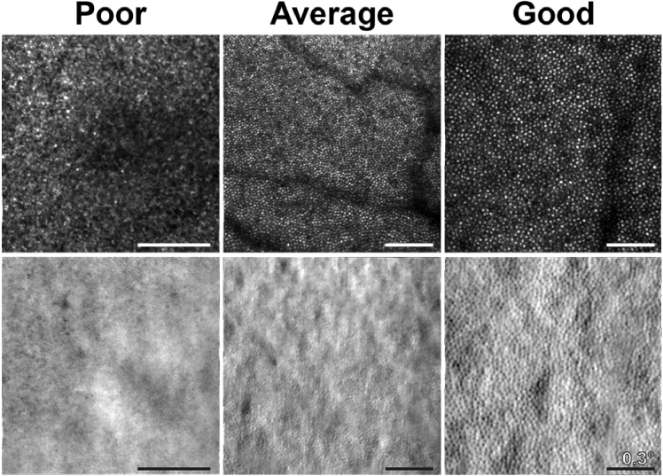
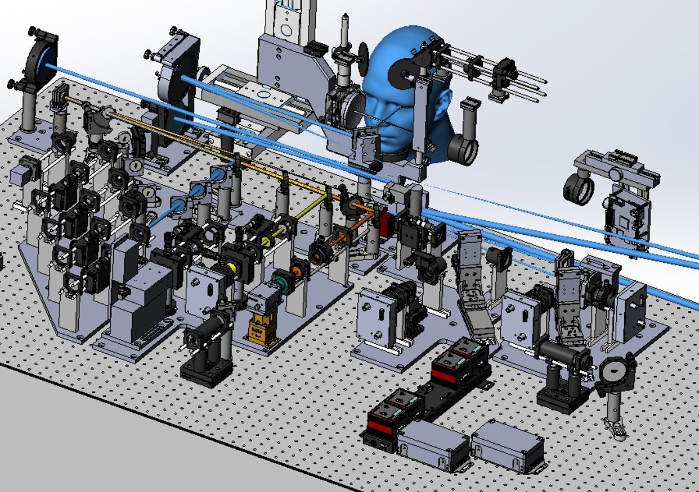
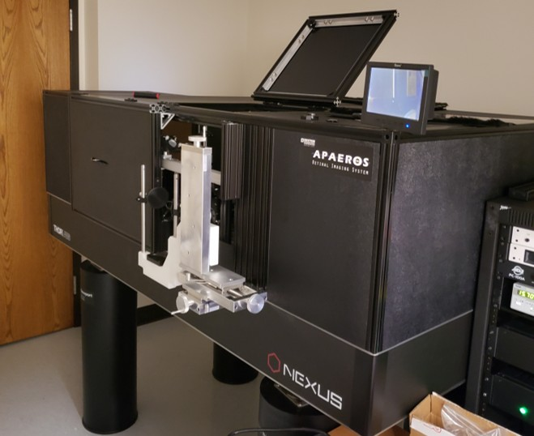
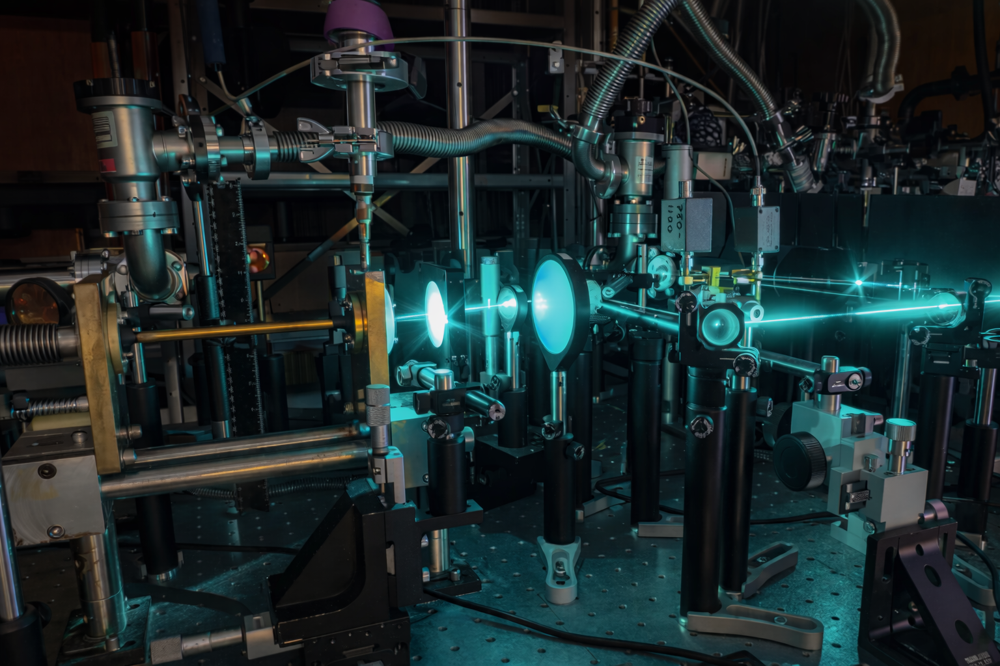

Overview
Early into my role at Boston Micromachines, I was tasked with leading the hardware design of a novel Retinal Imaging Machine, a highly integrated system combining MEMS, laser optics, electronics and precision automation. Previously, the company had shipped only two custom systems in five years. Sensing an opportunity to commercialize and scale this product, I focused the hardware design by prioritizing modularity. This immediately improved the efficiency of R&D by allowing the prototyping of each module in parallel, while also enabling all contributors to know exactly how their module impacted the greater system and each other. This modular approach streamlined production by enabling the independent manufacturing, calibration, and testing of each module. Thanks to this focus, we delivered higher quality, more reliable products that could be easily upgraded or customized for future applications.
Applications
Adaptive Optics Scanning Laser Ophthalmoscopy (AOSLO) uses deformable mirrors to allow researchers to see higher quality images into deeper layers of the eye.
This technology has been used in Joslin Diabetes Research Center, Medical College of Wisconsin for imaging of the retina's photodetectors, among others.

Results & Outcomes
By prioritizing modularity, R&D and production of each assembly was streamlined to be completed in parallel and improving the reliability and repeatability of the system.
- Fully documented and productized system for future scalability.
- Optical calibration time reduced 65%.
- On-site installation time reduced from two weeks to 5 hours.
- Reduced setup time by 30% through improved user experience.

Technical Leadership Experience
While leading the hardware design, I served as the product manager coordinating timelines, objectives and deliverables across the cross-functional team of Optical, Electrical, Software and Mechanical engineers.

